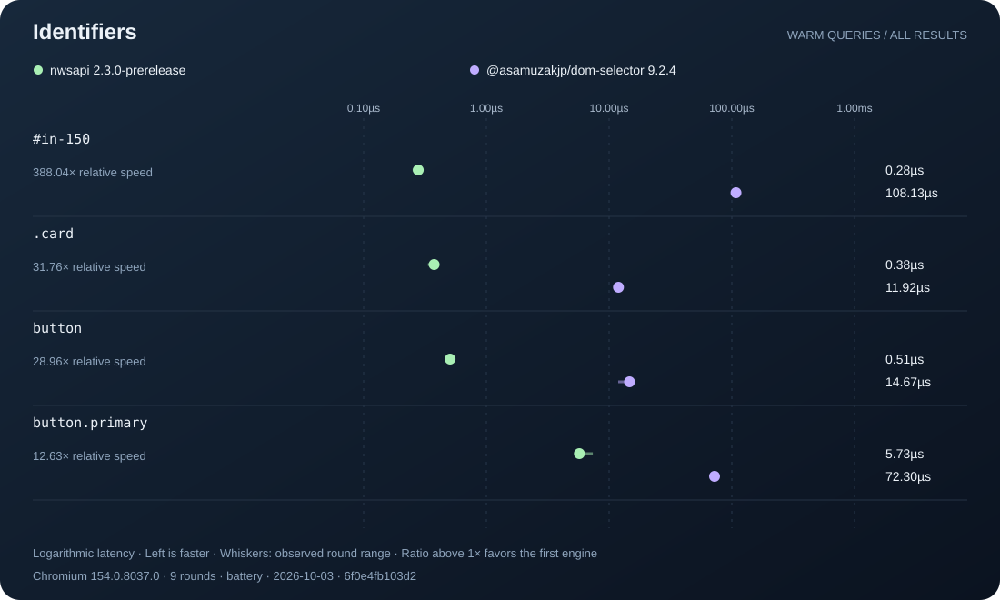
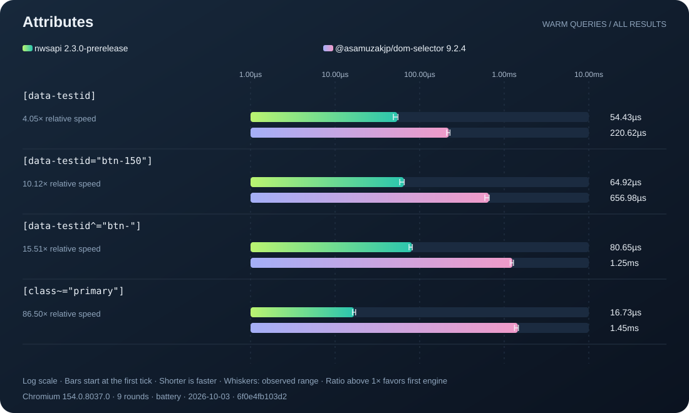
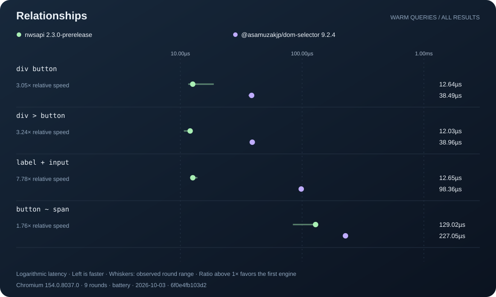
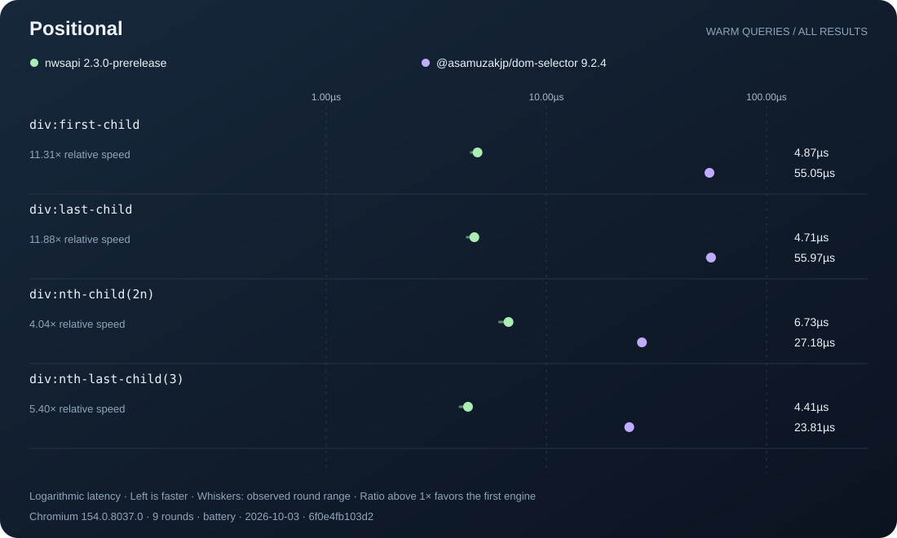
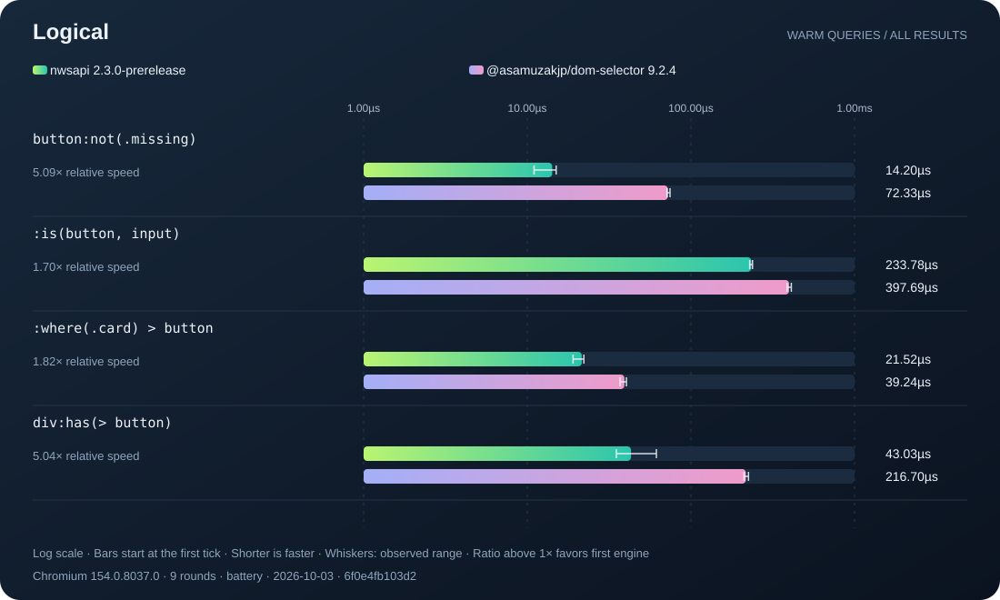
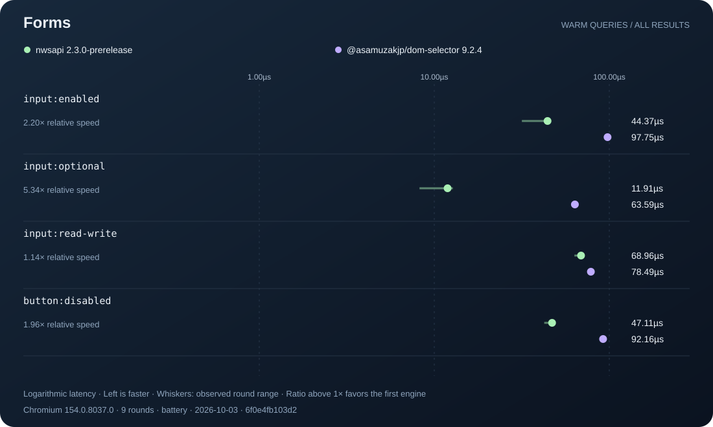
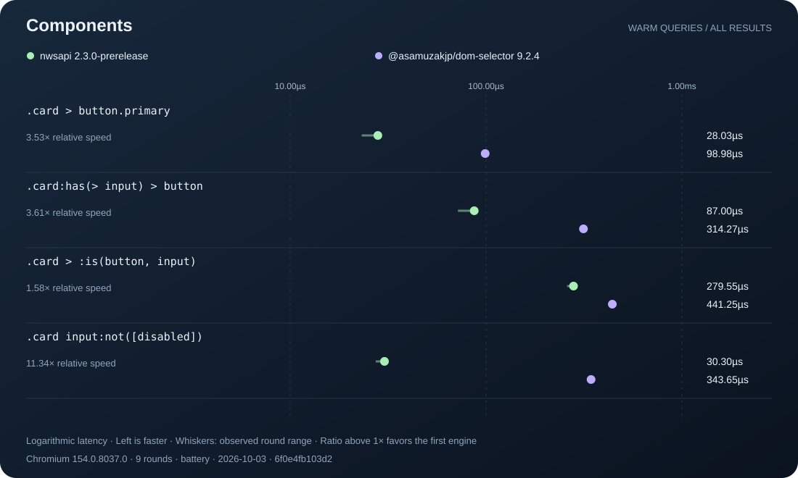
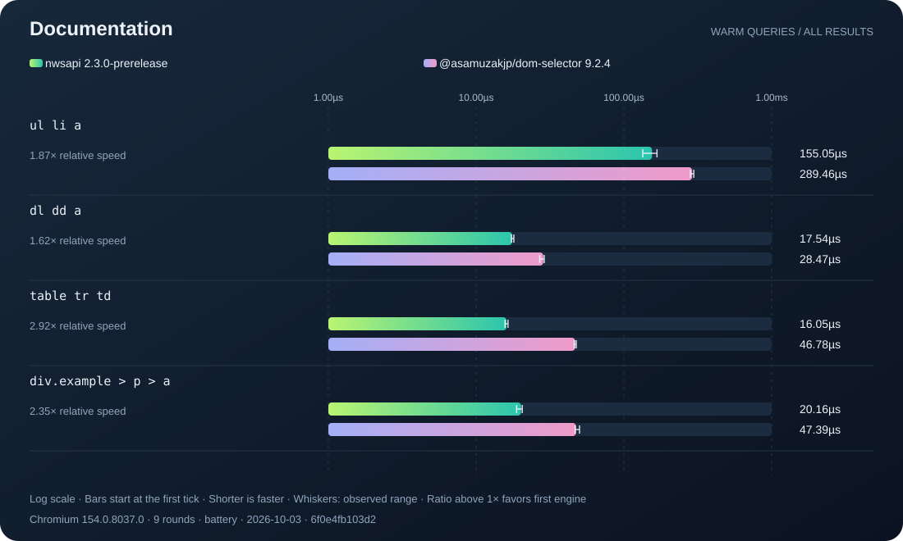
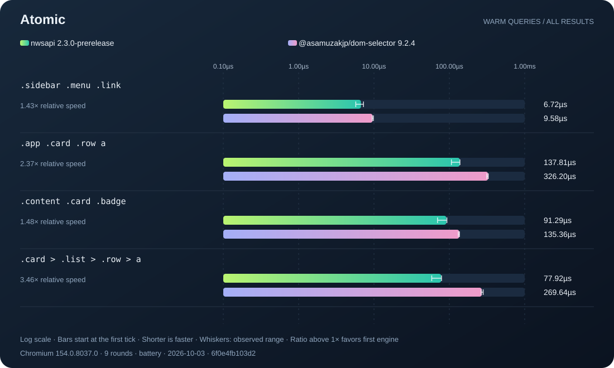

NWSAPI / performance laboratory
Every query.
Every comparison.
A reproducible latency atlas for nwsapi 2.3.0-prerelease and @asamuzakjp/dom-selector 9.2.4. Explore the full measured set, including slower cases and round-to-round variation.
36selector cases
9rounds per engine
36 / 36lower median for first engine
Measurement method & provenance
Alternating engine order, fresh identical document per round, 20ms warmup, timed batches. Native ordered identity checks before and after timing. Setup excluded. The charts show warm queries returning all matches. Case counts are descriptive, not a statistical significance claim. Fixtures are synthetic workloads, not an application-wide speedup estimate. Whiskers are observed ranges, not confidence intervals. Axes are logarithmic and independently scaled per panel. Ratios are second-engine latency divided by first-engine latency. Above 1× favors the first engine, below 1× favors the second.
- Runtime
- Chromium 154.0.8037.0
- Host
- Native browser DOM, direct library APIs
- Hardware
- Apple M1 Max
- Power
- battery
- Recorded
- 2026-10-03T18:35:35.568Z
- Candidate
- 6f0e4fb103d2052ab6016509d71d2e417b2774bf7de456c3d795b6bd3da6b296
- Input SHA-256
- 09398e9ce3b3e9db556f7870fca0b1a044a8a2c51fb3e5ab0f2670be57f09fb1
Recorded measurements and raw round samples

identifiers · 4 selector cases from the recorded fixtures. Direct library calls on the same host, with all result elements returned. Dots show medians of per-round batch averages. Whiskers show observed minimum–maximum across rounds. These charts exclude compilation, initialization and mutation costs.
attributes · 4 selector cases from the recorded fixtures. Direct library calls on the same host, with all result elements returned. Dots show medians of per-round batch averages. Whiskers show observed minimum–maximum across rounds. These charts exclude compilation, initialization and mutation costs.
relationships · 4 selector cases from the recorded fixtures. Direct library calls on the same host, with all result elements returned. Dots show medians of per-round batch averages. Whiskers show observed minimum–maximum across rounds. These charts exclude compilation, initialization and mutation costs.
positional · 4 selector cases from the recorded fixtures. Direct library calls on the same host, with all result elements returned. Dots show medians of per-round batch averages. Whiskers show observed minimum–maximum across rounds. These charts exclude compilation, initialization and mutation costs.
logical · 4 selector cases from the recorded fixtures. Direct library calls on the same host, with all result elements returned. Dots show medians of per-round batch averages. Whiskers show observed minimum–maximum across rounds. These charts exclude compilation, initialization and mutation costs.
forms · 4 selector cases from the recorded fixtures. Direct library calls on the same host, with all result elements returned. Dots show medians of per-round batch averages. Whiskers show observed minimum–maximum across rounds. These charts exclude compilation, initialization and mutation costs.
components · 4 selector cases from the recorded fixtures. Direct library calls on the same host, with all result elements returned. Dots show medians of per-round batch averages. Whiskers show observed minimum–maximum across rounds. These charts exclude compilation, initialization and mutation costs.
documentation · 4 selector cases from the recorded fixtures. Direct library calls on the same host, with all result elements returned. Dots show medians of per-round batch averages. Whiskers show observed minimum–maximum across rounds. These charts exclude compilation, initialization and mutation costs.
atomic · 4 selector cases from the recorded fixtures. Direct library calls on the same host, with all result elements returned. Dots show medians of per-round batch averages. Whiskers show observed minimum–maximum across rounds. These charts exclude compilation, initialization and mutation costs.Exact results
| Category | Selector | nwsapi 2.3.0-prerelease | @asamuzakjp/dom-selector 9.2.4 | Relative speed |
|---|
| identifiers | #in-150 | 0.28µs | 108.13µs | 388.04× |
| identifiers | .card | 0.38µs | 11.92µs | 31.76× |
| identifiers | button | 0.51µs | 14.67µs | 28.96× |
| identifiers | button.primary | 5.73µs | 72.30µs | 12.63× |
| attributes | [data-testid] | 54.43µs | 220.62µs | 4.05× |
| attributes | [data-testid="btn-150"] | 64.92µs | 656.98µs | 10.12× |
| attributes | [data-testid^="btn-"] | 80.65µs | 1.25ms | 15.51× |
| attributes | [class~="primary"] | 16.73µs | 1.45ms | 86.50× |
| relationships | div button | 12.64µs | 38.49µs | 3.05× |
| relationships | div > button | 12.03µs | 38.96µs | 3.24× |
| relationships | label + input | 12.65µs | 98.36µs | 7.78× |
| relationships | button ~ span | 129.02µs | 227.05µs | 1.76× |
| positional | div:first-child | 4.87µs | 55.05µs | 11.31× |
| positional | div:last-child | 4.71µs | 55.97µs | 11.88× |
| positional | div:nth-child(2n) | 6.73µs | 27.18µs | 4.04× |
| positional | div:nth-last-child(3) | 4.41µs | 23.81µs | 5.40× |
| logical | button:not(.missing) | 14.20µs | 72.33µs | 5.09× |
| logical | :is(button, input) | 233.78µs | 397.69µs | 1.70× |
| logical | :where(.card) > button | 21.52µs | 39.24µs | 1.82× |
| logical | div:has(> button) | 43.03µs | 216.70µs | 5.04× |
| forms | input:enabled | 44.37µs | 97.75µs | 2.20× |
| forms | input:optional | 11.91µs | 63.59µs | 5.34× |
| forms | input:read-write | 68.96µs | 78.49µs | 1.14× |
| forms | button:disabled | 47.11µs | 92.16µs | 1.96× |
| components | .card > button.primary | 28.03µs | 98.98µs | 3.53× |
| components | .card:has(> input) > button | 87.00µs | 314.27µs | 3.61× |
| components | .card > :is(button, input) | 279.55µs | 441.25µs | 1.58× |
| components | .card input:not([disabled]) | 30.30µs | 343.65µs | 11.34× |
| documentation | ul li a | 155.05µs | 289.46µs | 1.87× |
| documentation | dl dd a | 17.54µs | 28.47µs | 1.62× |
| documentation | table tr td | 16.05µs | 46.78µs | 2.92× |
| documentation | div.example > p > a | 20.16µs | 47.39µs | 2.35× |
| atomic | .sidebar .menu .link | 6.72µs | 9.58µs | 1.43× |
| atomic | .app .card .row a | 137.81µs | 326.20µs | 2.37× |
| atomic | .content .card .badge | 91.29µs | 135.36µs | 1.48× |
| atomic | .card > .list > .row > a | 77.92µs | 269.64µs | 3.46× |